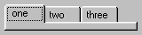

(label [, label ...] bottom = false, themed = false,
close_button = false)
A wrapper for the Windows Tab control.
Note: This just handles displaying the tabs, the content should be siblings of the TabControl.
Specify bottom: to get tabs for the bottom of a window.
Specify themed: to get Windows XP visual styles/themes.
If close_button is specified (as an image list index) then when the mouse is over the tab icon it will change to that image, and if it is clicked Tab_Close(i) will be sent. The parent is responsible for creating the image list and attaching it with SetImageList.
For example:
TabControl('one', 'two', 'three')

See also: TabsControl